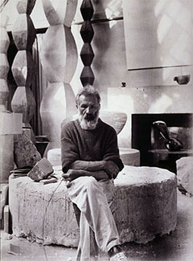
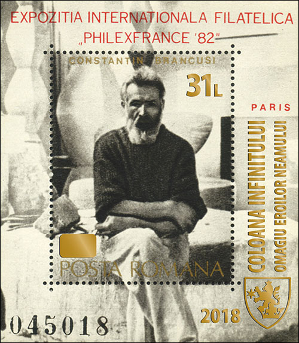
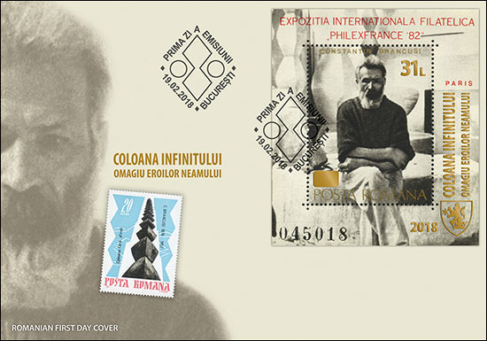
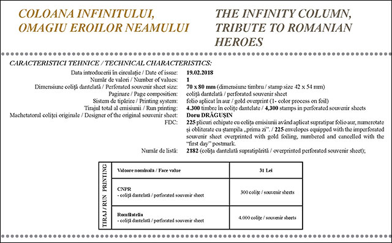

STAMP COLLECTORS - THE MILKING COWS OF ROMFILATELY
Română
Because this year Romania celebrates the 100 years anniversary of the Great Union of Romanian traditional regions, what could be more appropriate for a philatelic issue than Brancusi's statue known under the name of the "Infinite Column"? It was originally named by the author as "The Column of Endless Gratitude" and it was dedicated to Romanian soldiers fallen in 1916 on the bank of the Jiu River during the World War I.
 |
 |
Fig. 1. Romania 1982, Philexfrance Exhibition |
Brancusi in his workshop, Self-Portrait, 1933-1934 |
We would have expected the issuance of a new stamp, or of a Souvenir Sheet (S/S) that reproduces the monument, possibly as it was designed, in its original brass color that covers the underlying cast iron. But that was not the case because Romfilatelia, the Romanian stamp issuing entity, preferred simple and fast solutions at negligible costs and high gains. Let's look below what came out this time.

Fig. 2. Romania 2018. The overprinted S/S
A gimmick of the Romfilatelia department
It lasted only two years and Romfilatelia repeated its procedure of capitalizing on some of the old S/S that lay in its stocks, which became its own by taking them over from the former communist regime. About what was done philatelically before, I already described in this article. This time Romfilatelia eyes fell on the issue Philatelic International Philatelic Exhibition "Philexfrance '82", Sc. Nr. 3070. It shows on its central stamp one of the best-known Romanian artists, Constantin Brancusi, in his studio in Paris (Fig.1). And he also displays copies of different versions of the infinite Column, which are best seen on the photographic self-portrait that has as background the interior of the artist's studio.

Fig. 3. Romania 2018. Brancusi. First Day Cover (FDC)
The Romfilatelia found 4,300 copies that had been kept in stock for 36 (!) years, which, taking advantage of the golden inscriptions on the central stamp, they overprinted by the procedure already used before, the folio applied in gold. That's how this kitsch came out of their gimmick!
The old value of 10 Lei is covered by a golden bar that falls badly in the workshop image. It is the only one that balances, quite incompletely, the massive inscription on the right, on two vertically-scattered columns, "THE COLUMN OF INFINITE. HOMAGE TO THE HEROES OF THE NATION". These massive text columns turn everything to the right, destroying the balance of the 1982 S/S. The logo, value and year, added by overprinting to the bottom right side, contribute to this imbalance, reinforcing the make-up character of the ensemble.
ANCOM requirements
Let's see how this issue meets the ANCOM (National Administration for Communication) draft decision for philatelic issues, the conditions for their issuing, printing, putting into circulation, withdrawing from circulation, and marketing stamps and postal effects.
1. ANCOM proposes that postage stamps meet the following requirements: have printed "Romania", the nominal value, followed by the name or the symbol of the national currency and, optionally, the "Romanian Post"; include the indication of the year of issue, ... ".
We immediately notice (Figure 2) that the name of the country, Romania, is completely missing, appearing only the old text, Posta Romana, which has an optional character, which cannot replace the names of country. But, however, it replaces it ...

Fig. 4. Technical features provided by Romfilatelia.
2. One requirement from ANCOM reads: "to have a vertical or horizontal dimension between 15 mm and 55 mm"
From Fig. 10 we infer that the sheet has the dimensions of 70 mm x 80 mm, so that it is well above the required 55 mm. It is appropriate for the postage stamps issues to be used for franking mail. However, it is true that the central stamp (42 mm x 54 mm) complies with the provision, but it is not obvious whether it has separate franking power when taken out of the S/S, especially since the year of issue does not appear on it, as required by ANCOM.
3. A further quote from the draft decision referred to above: "Thus, Article 8 "Postage stamps" of the Universal Postal Convention and the Final Protocol, adopted at the Geneva Congress of the Universal Postal Union on 12 August 2008, ratified by Romania by Law no. 328/2009 on the ratification of acts adopted at the Congress of the Universal Postal Union, held in Geneva, stipulates in paragraph 2 that: issuing postal authorities shall not support or approve the use of any artifice intended to increase the sales of postage stamps or products incorporating postage stamps, by suggesting a potential rarity of these products."
Even though the number of collectors has dropped considerably, announcing and producing a first day cover with a print run of only 225 pieces is a suggestion of rarity and infringes the above requirement.
Other observations
The serial number of the Souvenir Sheet (in this case, the 045018, curiously also the same one of the S/S appearing on the FDC) has nothing to do with the actual print run (4,300) of the overprinted sheets.
An old requirement of the UPU is that philatelists should not be exploited financially by very high facial values. The postal rate for standard domestic correspondence in Romania starts today at 1.30 lei, and for the international standard rate at 3.50 lei. The 31 lei face value of the new S/S goes far beyond standard postage rates…
The purchase price of a complete set (S/S and FDC) is for this issue is 31 lei + 71 lei = 102 lei (21.85 Euro or 26.84 US Dollar). Such a price, asked for a S/S and a FDC only, is shameless, especially if we consider the fact that Romfilatelia has invested so little in producing this philatelic "masterpiece". This high price makes this material hard to sell, eliminating the young collectors, those who represent the future of Romanian philately.
For comparison, we present an extract from the stamp prices comparison table issued, in 2016 by two countries with a comparable number of inhabitants, Romania and The Netherlands. The complete table can be accessed here .
Country |
2016 Stamp Count |
Face Value |
Scott Catalog Value |
Romania |
148 |
1076.70 Lei = 230.74 Euro |
$537.5 |
Netherlands |
33 |
95.84 Euro |
$217.75 |
Table 1. Scott Worldwide Stamp Cost Chart (excerpt)
It is immediately visible that Romania issued 4.5 times more stamps in 2016 than The Netherlands, with a total value of 2.4 times higher, even though Romanians do not enjoy at all the living standards of the prosperous Dutchmen.